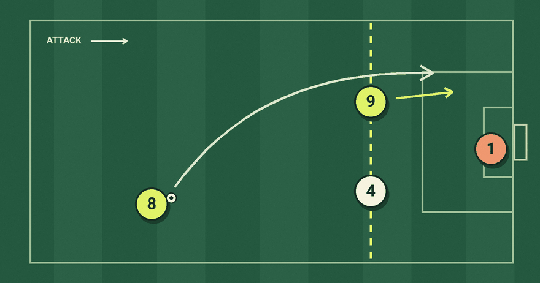

Law 11 · Offside
Does the goal stand?
When No. 8 passes, No. 9 is level with the second-last opponent. No. 9 then runs ahead, receives the pass and scores.
See the decision
Goal. No. 9 was onside when the pass was played. The later run beyond the defender is legal.